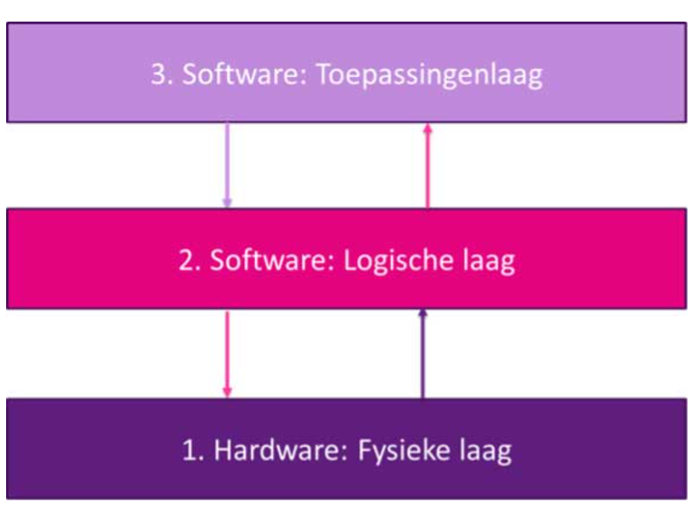
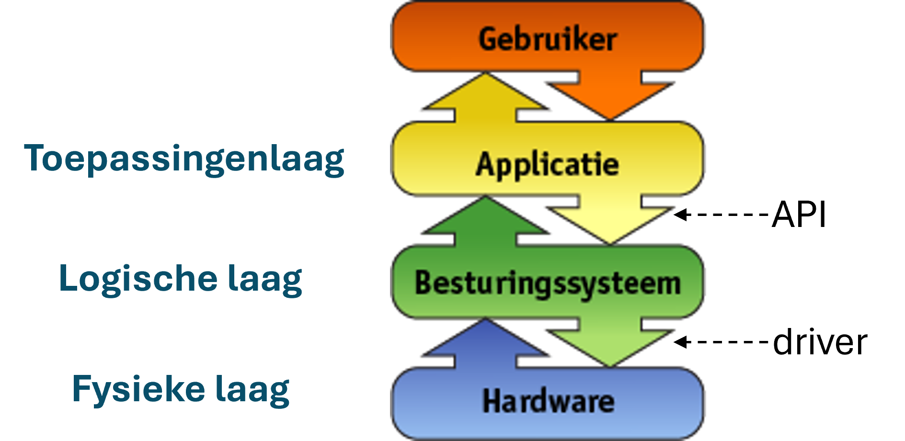
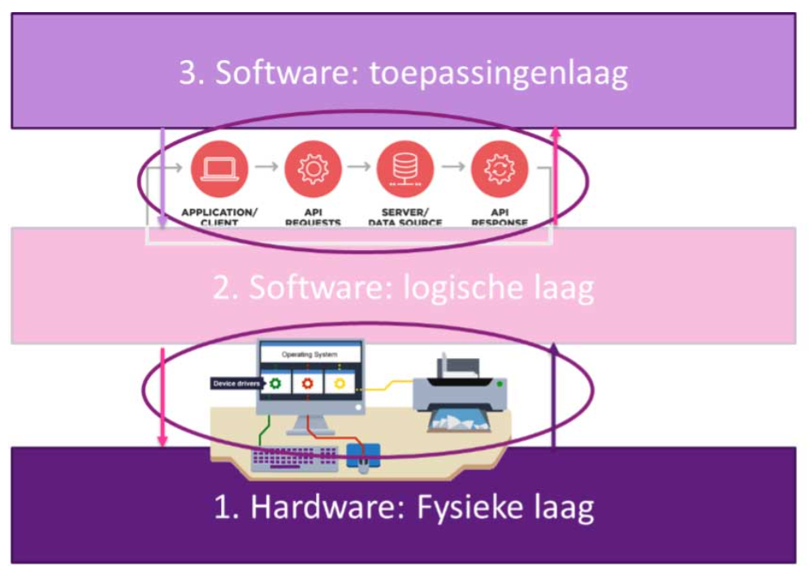
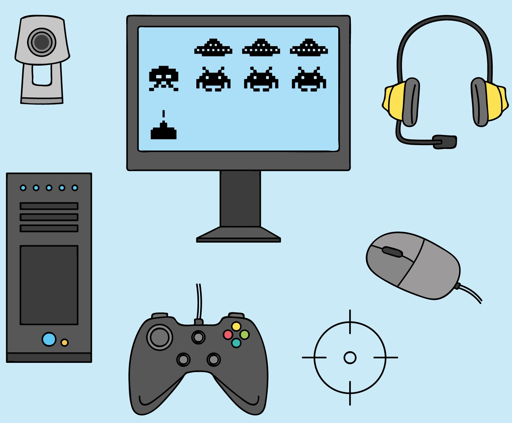

1.1 De drielagenmodel aan de hand van een voorbeeld
Wat gebeurt er als jij een foto maakt? Je opent de camera-app, richt je telefoon en drukt op de knop om een foto te maken. Op de achtergrond werken de apps, het besturingssysteem en de hardware samen in drie lagen:
- Fysieke laag: de camera (hardware) legt het beeld vast;
- Logische laag: het besturingssysteem slaat de foto op;
- Toepassingenlaag: de app laat jou de foto maken en bewerken.
Deze drie lagen werken samen zonder dat jij daar iets van merkt.
1.2 Het drielagenmodel
Het drielagenmodel beschrijft hoe hardware, software en gebruiker samenwerken in een digitaal systeem.

Drielagenmodel
Allereerst is er de fysieke laag. Dit is alles wat je kunt aanraken: de hardware. Denk aan de camera en het touchscreen van je smartphone. Het gaat ook om onderdelen ín het apparaat, zoals de geheugenchips waarop je foto's worden opgeslagen, de lens waarmee je scherpstelt, of de accu. Bij een pc kun je ook denken aan het toetsenbord of een printer.
Daarboven zit de logische laag. Deze laag bestaat uit het besturingssysteem. Voorbeelden van besturingssystemen zijn Android of iOS (voor smartphones en tablets), en Windows, macOS of Linux (voor computers). De logische laag zorgt ervoor dat de drie lagen goed samenwerken. Zo wordt het apparaat betrouwbaar en veilig in gebruik. Als jij bijvoorbeeld een foto maakt, zorgt het besturingssysteem ervoor dat de camera de juiste instellingen gebruikt, de foto opslaat en daarna weer geheugen vrijmaakt.
De bovenste laag is de toepassingenlaag. Hierin bevinden zich de apps (of toepassingen) die jij als gebruiker gebruikt. Denk aan de camera-app waarmee je een foto maakt, de galerij waarin je die bekijkt, of WhatsApp of Signal waarmee je de foto verstuurt.
Componenten in een computersysteem werken samen doordat ze elkaar diensten aanbieden. De apps in de toepassingenlaag geven opdrachten aan het besturingssysteem in de logische laag – bijvoorbeeld: "sla dit bestand op". Het besturingssysteem vertaalt zo'n opdracht naar acties op de fysieke laag, zoals: "sla dit op op de harde schijf".
Daarbij controleert het besturingssysteem ook of een app wel de juiste toestemming heeft, bijvoorbeeld om de camera te gebruiken. Als dat niet zo is, wordt de toegang geblokkeerd. Het besturingssysteem regelt dit allemaal achter de schermen, zodat jouw apps veilig, snel en zonder gedoe kunnen doen wat jij wilt.

Het drielagenmodel en bijbehorende onderdelen.
Verwerkingsopdracht: Volgorde van de drie lagen
Welke volgorde geeft de lagen van het lagenmodel van onder naar boven correct weer?
- Toepassingenlaag – Fysieke laag - Logische laag
- Fysieke laag – Logische laag – Toepassingenlaag
- Fysieke laag – Toepassingenlaag – Logische laag
- Logische laag – Fysieke laag – Toepassingenlaag
ANTWOORD: B) Fysieke laag – Logische laag – Toepassingenlaag
Verwerkingsopdracht: De lagen van een apparaat
In deze opdracht ga voor een bepaald apparaat onderzoeken welk onderdelen er in elk van de drie lagen zit.
- Kies uit een van de volgende apparaten: tablet, laptop, printer, smartwatch.
- Noem voor ieder van de drie lagen 1 onderdeel.
VOORBEELD ANTWOORDEN
Tablet:
- Fysiek: Touchscreen, camera’s, batterij, speakers, microfoon.
- Logisch: Android, iOS
- Toepassing: Browser zoals Google Chrome/Safari, en apps zoals Roblox, Minecraft en Subway Surfers.
Laptop:
- Fysiek: Toetsenbord, scherm, accu
- Logisch: Windows 11, of macOS Ventura / Sonoma / Monterey
- Toepassing: Safari, Word, Teams, Spotify.
Printer:
- Fysiek: Papierinvoer, inktcartridges, printkop.
- Logisch: Printerfirmware of printerdriver.
- Toepassing: Printopdracht vanuit Word of een foto printen via een app.
Smartwatch:
- Fysiek: Scherm, hartslagsensor, batterij.
- Logisch: WatchOS (Apple) of Wear OS (Google).
- Toepassing: Stappenteller-app, meldingen-app.
Verwerkingsopdracht: Herkenbaarheid
Welk van de drie lagen vind je het makkelijkst om te benoemen? Licht toe waarom.
VOORBEELD ANTWOORDEN:
- Ik vond de fysieke laag makkelijk, want je ziet direct onderdelen zoals een scherm of een toetsenbord.
- De toepassingenlaag was makkelijk, omdat we allemaal apps gebruiken en herkennen.
1.2 Interfaces: Communicatie tussen de lagen
Een interface zorgt voor de communicatie tussen twee
verschillenden onderdelen van een computer. Dat kunnen twee onderdelen binnen
dezelfde laag zijn, of twee onderdelen die bij verschillende lagen horen.

Interfaces
Er zijn verschillende soorten interfaces:
- Application Programming Interfaces (API's) - zorgen voor communicatie tussen software onderdelen.
- Drivers - zorgen voor communicatie tussen hardware en software. Het is speciale software om bijvoorbeeld je printer
aan te sturen, of de camera van je telefoon.
- GUI (Graphical User Interface) - via deze interface communiceert een apparaat met de
gebruiker. Een GUI is wat je op het scherm ziet als je een computer of telefoon gebruikt: knoppen, menu’s, vensters, pictogrammen en schuifbalken. Hierdoor kan je communiceren met het apparaat met de muis of touchscreen.
- Hardware interfaces - dit zijn elektronische verbindingen tussen fysieke onderdelen. Bijvoorbeeld tussen het geheugen en de processor.
- Connectoren (of pluggen) - dit zijn bekabelde hardware interfaces: denk aan de kabel tussen
je monitor en je pc.
We bekijken nu twee soorten interfaces in meer detail: API's en drivers.
De drielagenmodel met API's en drivers
1.2.1 Application Programming Interfaces (API’s)
Application Programming Interfaces (API’s) zorgen voor de communicatie tussen verschillende softwareonderdelen. Denk bijvoorbeeld aan een app die via het besturingssysteem de camera gebruikt. De app geeft dan een opdracht zoals “maak een foto”. De API stuurt deze opdracht door naar het besturingssysteem, dat vervolgens de juiste hardware aanstuurt.
Er zijn API’s voor allerlei functies: van het bepalen van je locatie en het verwerken van toetsaanslagen of tikken op het touchscreen, tot het openen of opslaan van bestanden in het geheugen. Dankzij API’s hoeft de app niet precies te weten hoe de hardware werkt — dat regelt de API.
Als je zelf een app maakt, kun je met behulp van API’s gegevens gebruiken van sensoren op je telefoon, zonder dat je de technische details hoeft te kennen. In het voorbeeld hieronder zie je hoe je via een Android-API gegevens over de luchtvochtigheid kunt gebruiken in je eigen app.
Voorbeeld: luchtvochtigheid meten
- Ga naar de documentatie van de luchtvochtigheidssensor (humidity sensor in het Engels).
- Je ziet daar welke gegevens via de API beschikbaar zijn. In dit geval is dat één waarde:
values[0]: Relative ambient air humidity in percent
- Je kunt deze waarde in je app gebruiken. Bijvoorbeeld: als de luchtvochtigheid hoog is, kun je de gebruiker waarschuwen voor kans op regen of benauwdheidsklachten.
Verwerkingsopdracht: Temperatuur meten
Onderzoek hoe je via de Android API de temperatuur op een mobiele telefoon kunt meten:
- Ga naar de Android API-documentatie.
- Zoek op het woord temperature (Engels voor "temperatuur").
- Hoeveel waarden levert de API terug? En in welke eenheid (bijvoorbeeld graden Celsius) worden deze weergegeven?
- Moet je de technische details van de sensor kennen om de temperatuur uit te lezen, zoals het type of merk van de sensor?
- Leg aan de hand van je antwoord uit waarom het drielagenmodel het mogelijk maakt dat je maar één versie van je app hoeft te maken voor alle Android-toestellen, en één versie voor iOS-apparaten.
ANTWOORD:
- ...
-
Hier staat de informatie over de temperatuur.
- Het geeft 1 waarde terug, de temperatuur in graden Celsius.
- Nee, je hoeft geen detailgegevens over de sensor te weten.
- De lagenmodel is handig want dan kan een appontwikkelaar hoeft geen rekening te houden met welk type of merk sensor er gebruikt wordt en hoe die uit te lezen. De programmeur hoeft alleen rekening te houden met de besturingssyteem, want die communiceert met de sensor. De programmeur hoeft dus maar twee versies van zijn app te maken, één voor iOS en één voor Android.
Verdieping: Meten van de versnelling
Een controller moet kunnen reageren op bewegingen. Hiervoor kun je de versnelling meten.
- Ga naar de documentatie van de versnellingsmeter (in het Engels: accelerometer):
SensorEvent – accelerometer
.
- Bekijk welke gegevens de API levert. In dit geval krijg je een lijst met drie waarden:
values[0]: Versnelling (zonder zwaartekracht Gx) op de x-asvalues[1]: Versnelling (zonder zwaartekracht Gy) op de y-asvalues[2]: Versnelling (zonder zwaartekracht Gz) op de z-as
Verdiepingsopdracht: Meten van hoeksnelheid
Een controller moet ook kunnen reageren op draaien en kantelen. Hiervoor gebruik je de gyroscoop, die de hoeksnelheid meet. Onderzoek hoe je deze gegevens via de Android API kunt opvragen:
- Ga naar de API-documentatie.
- Zoek op het woord gyroscope (Engels voor "gyroscoop").
- Hoeveel waarden krijg je terug? En in welke eenheid worden deze weergegeven?
Antwoord:
- ...
- De juiste link is
deze
.
- Er worden drie waarden teruggegeven: één voor elke as (x, y en z). De eenheid is radialen per seconde (in het Engels: radians/second).
1.2.2 Drivers
Drivers zorgen ervoor dat hardware en het besturingssysteem met elkaar kunnen communiceren. Een driver is speciale software die het besturingssysteem alle informatie geeft die het nodig heeft om een hardware-onderdeel aan te sturen. Het regelt ook de communicatie tussen hardware en software.
Een voorbeeld van een apparaat waarvoor je soms handmatig een driver moet installeren, is een gamecontroller, zoals een Xbox- of PlayStation-controller. Als je deze aansluit op een pc, probeert het besturingssysteem meestal automatisch een driver te vinden. Werkt dit niet, dan moet je zelf de juiste driver installeren zodat je controller herkend wordt en alle knoppen werken zoals bedoeld.

Drivers zorgen voor samenwerking tussen het besturingssysteem en randapparatuur.
(Bron: Freepik)
Zonder drivers zouden computers niet goed kunnen samenwerken met randapparatuur zoals muizen, toetsenborden, printers of koptelefoons.
Verwerkingsopdracht: Drivers en het besturingssysteem
- Met welke lagen in het drielagenmodel hebben drivers te maken?
- Leg uit waarom je een driver kunt zien als een voorbeeld van een interface.
- Noem een concreet voorbeeld van een driver en geef kort aan waarvoor die gebruikt wordt.
ANTWOORDEN:
- Drivers zijn betrokken bij de fysieke laag (hardware) en de logische laag (besturingssysteem). Ze vormen de schakel tussen het besturingssysteem en de hardware.
- Een driver vertaalt de commando’s van het besturingssysteem naar signalen die de hardware begrijpt, en andersom. Het is dus de verbinding tussen die twee lagen en zorgt ervoor dat de twee lagen met elkaar kunnen communiceren.
- Een printerdriver is een voorbeeld. Deze zorgt ervoor dat het besturingssysteem opdrachten kan geven aan een printer, zoals het afdrukken van een document.
Verwerkingsopdracht: Begrippen koppelen
Koppel elk begrip aan de juiste definitie.
Begrippen:
Fysieke laag
Logische laag
toepassingenlaag
Interface
Driver
API
Definities
Software die de hardware aanstuurt
Schakel tussen twee lagen, zoals een API of een driver
Interface waarmee apps communiceren met het besturingssysteem
Besturingssysteem zoals Android of iOS
Apps zoals de camera-app of WhatsApp
Hardware zoals de camera, het geheugen of het scherm
ANTWOORDEN:
- Fysieke laag – Hardware zoals de camera, het geheugen of het scherm
- Logische laag – Besturingssysteem zoals Android of iOS
- toepassingenlaag – Apps zoals de camera-app of WhatsApp
- Interface – Schakel tussen twee lagen, zoals een API of een driver
- Driver – Software die de hardware aanstuurt
- API – Interface waarmee apps communiceren met het besturingssysteem
1.3 Belang van de lagen
Het principe van het drielagenmodel heeft een aantal voordelen:
- Veiligheid en betrouwbaarheid: Het drielagenmodel zorgt ervoor dat een computer ordelijk, veilig en betrouwbaar werkt. Het besturingssysteem weet precies welke onderdelen met elkaar mogen communiceren. Apps (in de toepassingenlaag) kunnen niet rechtstreeks de hardware (fysieke laag) aansturen; ze moeten dit altijd via het besturingssysteem (logische laag) doen. Dat geeft het besturingssysteem controle: het kan bijvoorbeeld weigeren dat een app zomaar je camera gebruikt of dat je telefoon geluid maakt als hij op stil staat – bijvoorbeeld tijdens de les. Zo voorkomt het besturingssysteem bijvoorbeeld dat een kwaadaardige app zomaar toegang krijgt tot jouw persoonlijke gegevens of het geheugen beschadigt.
- Onderdelen kunnen vervangen of verbeterd worden: Dankzij het drielagenmodel kun je onderdelen in één laag veranderen zonder dat er iets in de andere lagen aangepast hoeft te worden. Als je bijvoorbeeld een nieuwe muis of printer aansluit (fysieke laag), blijven je programma’s (toepassingenlaag) gewoon werken. Het besturingssysteem (logische laag) zorgt ervoor dat de communicatie met de nieuwe hardware op de juiste manier verloopt. Dit maakt computersystemen flexibel, beter te onderhouden en makkelijker aan te passen aan nieuwe technologie.
- Lagen werken onafhankelijk van elkaar: In het drielagenmodel hoeft een app (toepassingenlaag) niet te weten hoe de hardware precies werkt. Zolang het besturingssysteem (logische laag) goed functioneert, kunnen programma’s probleemloos samenwerken met verschillende soorten apparaten. Je kunt bijvoorbeeld je harde schijf (fysieke laag) vervangen door een groter model, zonder dat de apps opnieuw geïnstalleerd hoeven te worden. Dankzij deze scheiding zijn software en hardware onafhankelijk van elkaar. Dat betekent ook dat veel oude programma’s nog steeds kunnen draaien op nieuwe computers – zolang de logische laag (het besturingssysteem) de juiste verbinding verzorgt.
- Handig voor ontwerpers en programmeurs: Programma’s worden ontwikkeld voor de toepassingenlaag en communiceren via duidelijke regels met het besturingssysteem (logische laag). Daardoor hoeven programmeurs zich niet bezig te houden met hoe de hardware precies werkt. Bij het maken van een app hoef je als ontwikkelaar bijvoorbeeld alleen rekening te houden met het besturingssysteem. Zo maak je één versie voor Android en één voor iOS, zonder dat je iets hoeft te veranderen aan de onderliggende hardware.
Verwerkingsopdracht: Het nut van het drielagenmodel
Waarom is het handig dat een computer werkt met een drielagenmodel?
- Omdat de computer dan sneller werkt.
- Omdat je dan precies moet weten hoe de hardware werkt voordat je software kunt maken.
- Omdat elke laag zijn eigen taak heeft en je onderdelen kunt vervangen zonder dat je het hele systeem hoeft aan te passen.
- Omdat het besturingssysteem dan overgeslagen kan worden bij het uitvoeren van programma’s.
ANTWOORD:
C. Omdat elke laag zijn eigen taak heeft en je onderdelen kunt vervangen zonder dat je het hele systeem hoeft aan te passen.
Toelichting: Het drielagenmodel zorgt voor een duidelijke taakverdeling. De lagen werken via vaste interfaces. Daardoor kun je bijvoorbeeld een nieuw toetsenbord aansluiten (verandering in de fysieke laag) zonder dat de toepassingen (zoals Word) hoeven te worden aangepast.
Verwerkingsopdracht: Veranderingen in één laag
Leg uit wat het voordeel is van het drielagenmodel als je bijvoorbeeld het toetsenbord vervangt door een touchscreen. Welke lagen veranderen, welke lagen blijven hetzelfde, en waarom is dat handig?
Voorbeeld antwoord:
Alleen de fysieke laag verandert. De logische laag (zoals het besturingssysteem) en de toepassingenlaag (zoals een tekstverwerker) hoeven niet aangepast te worden. Dat maakt het systeem flexibel en makkelijker aan te passen.